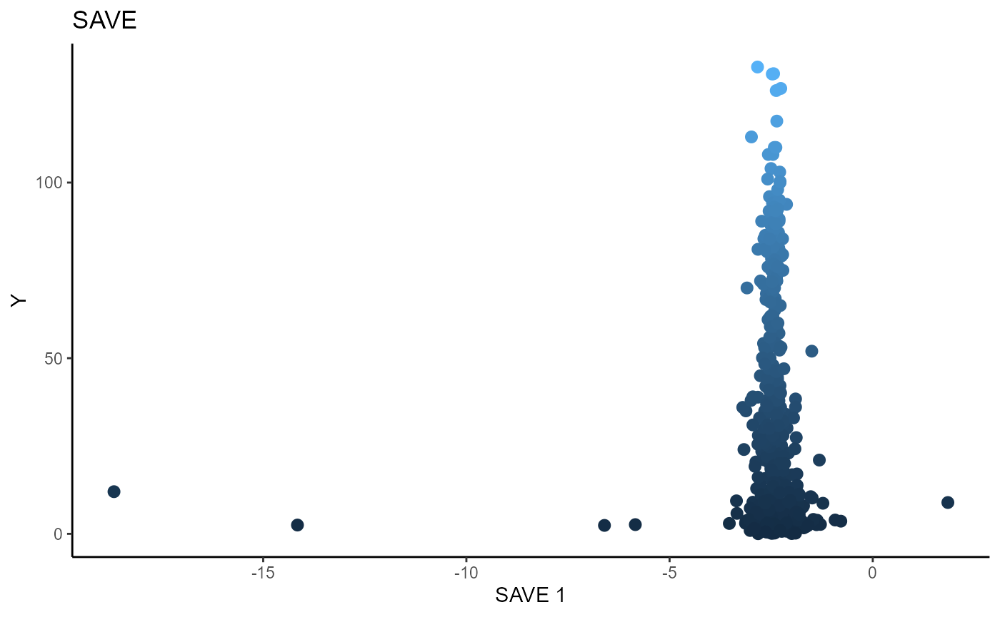
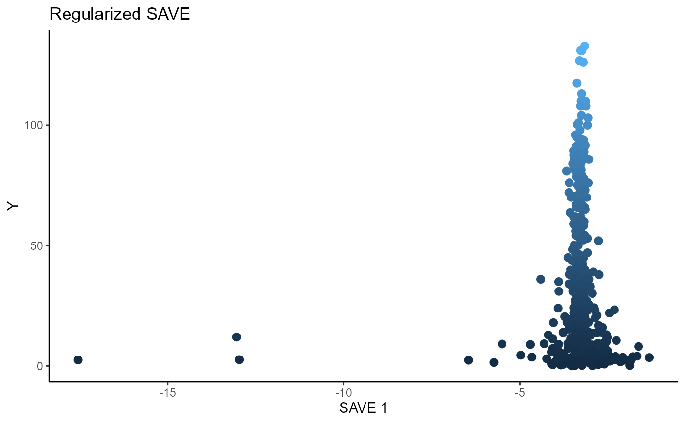

library(ggplot2)
#> Warning: package 'ggplot2' was built under R version 4.0.5
library(ggpubr)
library(gridExtra)
library(linearsdr)
data('supercond_datta', package="linearsdr")
dim(supercond_datta)
#> [1] 500 82
X = supercond_datta[, 1:81]
Y = supercond_datta[, 82]
# Sliced Inverse Regression
b_hat_sir = sir(x=X, y=Y, nslices = 10, d=2, ytype = "continuous",
lambda = 0)$beta
linearsdr:::ggplot_fsdr(Y, t((X)%*%b_hat_sir[,1]), y_on_axis=T,
ytype="continuous",
h_lab='SIR 1', v_lab='Y',
main_lab= paste0('SIR'), size=2.5)
# Sliced Average Variance Estimator
b_hat_save = save_sdr(x=X, y=Y, nslices = 10, d=2, ytype = "continuous",
lambda = 0)$beta
b_hat_save_reg = save_sdr(x=X, y=Y, nslices = 10, d=2, ytype = "continuous",
lambda = .1)$beta
save_plot=linearsdr:::ggplot_fsdr(Y, t((X)%*%b_hat_save[,1]), y_on_axis=T,
ytype="continuous",
h_lab='SAVE 1', v_lab='Y',
main_lab= paste0('SAVE'), size=2.5)
reg_save_plot=linearsdr:::ggplot_fsdr(Y, t((X)%*%b_hat_save_reg[,1]),
y_on_axis=T,
ytype="continuous",
h_lab='SAVE 1', v_lab='Y',
main_lab= paste0('Regularized SAVE'),
size=2.5)
# as_ggplot(do.call("grid.arrange", c(list(save_plot, reg_save_plot), nrow=1, ncol=2)))
save_plot; reg_save_plot;
# Directional Regression
b_hat_dr = dr(x=X, y=Y, nslices = 10, d=2, ytype = "continuous",
lambda = 0)$beta
b_hat_dr_reg = dr(x=X, y=Y, nslices = 10, d=2, ytype = "continuous",
lambda = .1)$beta
linearsdr:::ggplot_fsdr(Y, t((X)%*%b_hat_dr[,1]), y_on_axis=T,
ytype="continuous",
h_lab='DR 1', v_lab='Y',
main_lab= paste0('DR'), size=2)
linearsdr:::ggplot_fsdr(Y, t((X)%*%b_hat_dr_reg[,1]), y_on_axis=T,
ytype="continuous",
h_lab='DR 1', v_lab='Y',
main_lab= paste0('Regularized DR'), size=2.5)Forward methods using OPG
# Parallelization not run because of computational time.
library("doParallel")
#> Loading required package: foreach
#> Loading required package: iterators
#> Loading required package: parallel
library("foreach")
print( paste( as.character(detectCores()), "cores detected" ) );
#> [1] "16 cores detected"
# Create cluster with desired number of cores
if ( !grepl("hxq5", getwd()) ) {
cl <- makePSOCKcluster(detectCores()-1)
} else if ( grepl("hxq5", getwd()) ) {
cl <- parallel::makeCluster(nprocs, type=mp_type)
}
# Register cluster
doParallel::registerDoParallel(cl)
# Find out how many cores are being used
print( paste( as.character(getDoParWorkers() ), "cores registered" ) )
#> [1] "15 cores registered"
# stopCluster(cl)
X_std=(sapply(1:dim(X)[2], FUN= function(j)
center_cpp(X[,j], NULL) ) )%*%matpower_cpp(cov((X)) , -1/2);
b_hat_opg = opcg(x=X_std, y=Y, bw = 6, d=2, ytype = "continuous",
method= "cg", parallelize = T )
linearsdr:::ggplot_fsdr(Y, t((X_std)%*%b_hat_opg[,1]), y_on_axis=T,
ytype="continuous",
h_lab='OPG 1', v_lab='Y',
main_lab= paste0('OPG'), size=2.5)